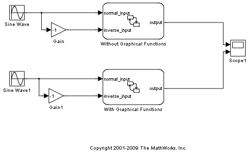
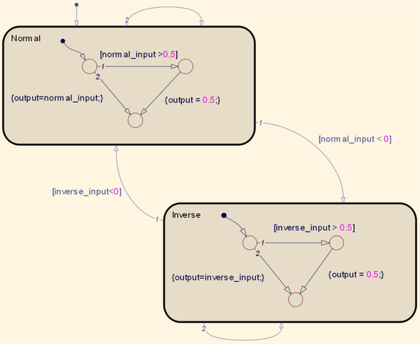

Stateflow® のグラフィカル関数の使用
このデモでは、グラフィカル関数の概念と、グラフィカル関数を使用して Stateflow® モデルを単純化する方法を示します。この例では、Stateflow チャートで 2 つの入力を渡します。第 1 の入力は、振幅が 1 で周波数が 2*pi の正弦波であり、第 2 の入力はこれと同じですが、反転されています。Stateflow チャートは両方の入力信号の正値のみを出力し、値 0.5 において信号を飽和させます。
目次
グラフィカル関数を使用しない場合
最初のチャート Without Graphical Functions では、出力がサブステート内で直接定義されます。Normal ステートが最初にアクティブになり、出力が normal_input に等しいように設定されます。normal_input が 0.5 を上回ると、出力が 0.5 に等しいように設定されます。normal_input が負 (<0) になると、ステート遷移が発生し、出力が Inverse ステート内で同様に再定義されます (ただし、inverse_input が使用されている場合は例外です)。
グラフィカル関数を使用した場合
With Graphical Functions チャートでは、グラフィカル関数を呼び出すことで出力が定義されます。ステート内で飽和遷移 (出力値が 0.5 にとどまる) を定義するのではなく、グラフィカル関数で 1 回だけ定義します。この簡単なデモでははっきりとわかりませんが、より多くの条件とパラメーターが導入され、出力を複数のステート内で定義しなければならない場合は、グラフィカル関数を使用すると、モデルを単純化できます。